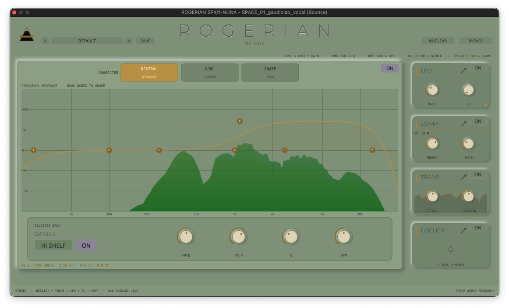
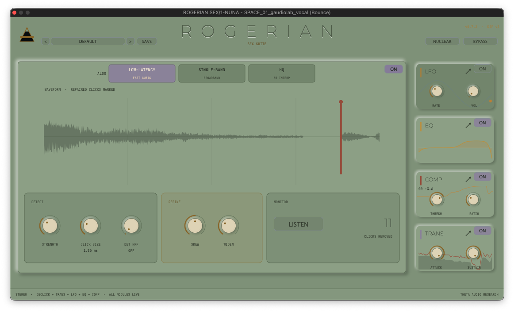
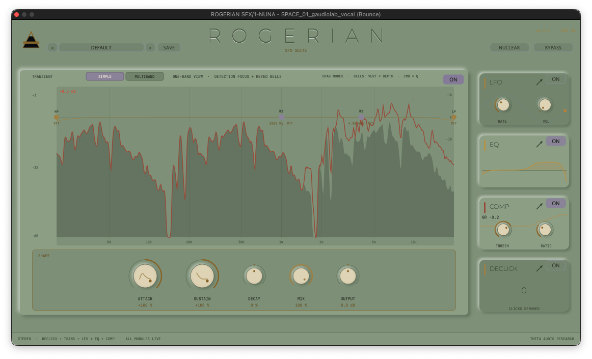
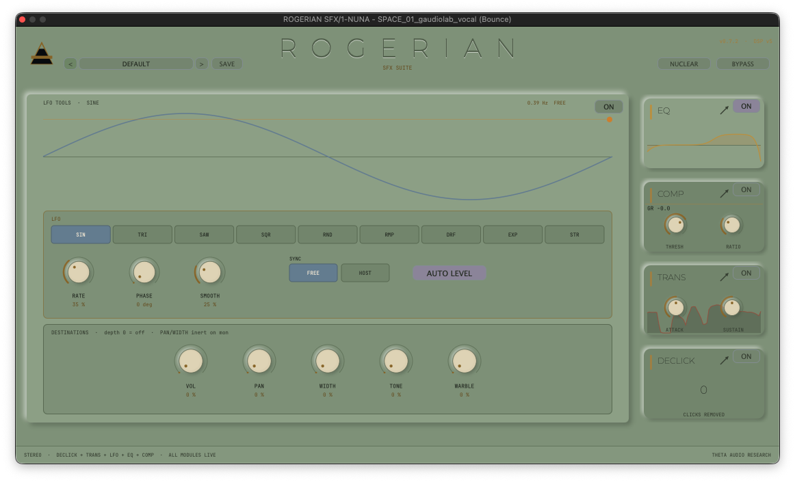
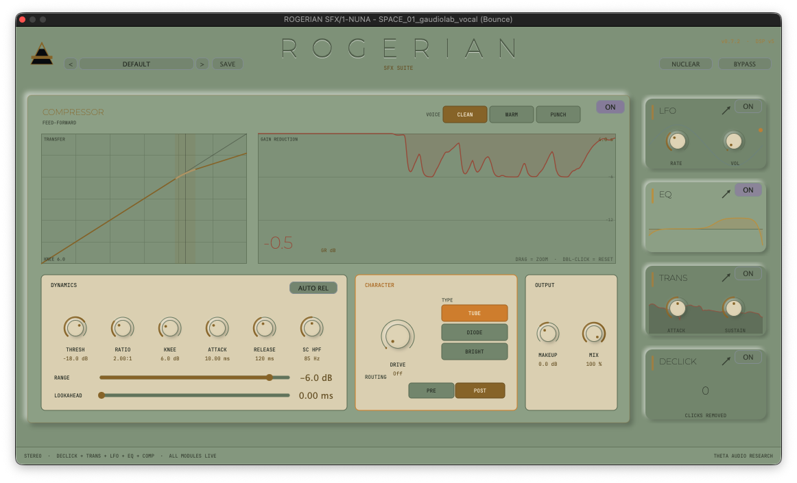

Interface
One Fixed Window
A 1116 × 640 focus-and-rack model. A single module holds the stage with its full controls while the other four stay live as mini-cards in the right rack.

ROGERIAN SFX is a five-module channel strip for sound effects — de-click, transient, LFO tools, EQ, and compressor. Its transient designer listens to a frequency range you set independently of the signal it shapes, so you choose what counts as a hit without filtering what anyone hears. Built on the same chassis as the ROGERIAN dialogue strip, with two modules swapped out for effects work. The DSP is written framework-free and compiles standalone, so the test harness exercises the exact code that ships. There is no oversampling anywhere in the chain.
Module framework is undergoing active optimization passes. Register your identity below for deployment telemetry upon final VST3 and AU stabilization.
GET_ROGERIAN_SFX
DE-CLICK → TRANSIENT → LFO TOOLS → EQ → COMPRESSOR.
The order is fixed: repair runs before anything downstream can shape an artifact, envelope work precedes modulation, tone-shaping follows both, and level control sits last so it answers to everything above it.

First in line, and silent until switched on.
First in the signal path, so nothing downstream shapes an artifact that should have been removed. Three algorithms — Low-Latency, Single-Band, and HQ (autoregressive interpolation across mid and wide gaps) — sit behind controls for strength, click size, widen, skew, and a detection high-pass. Disabled, it reports no latency at all.

A detector you aim separately from the audio.
Six Linkwitz-Riley 4th-order bands split at 120 Hz, 400 Hz, 1 kHz, 3 kHz, and 8 kHz, telescoping so the split reconstructs exactly. Shaping is driven by dB-domain envelope differentials: ATTACK reads the onset, SUSTAIN the decay below peak, DECAY the late tail. Two draggable nodes set the high-pass and low-pass points the onset detector listens to, while the audio itself passes unfiltered.

Modulation that draws what you will hear.
Nine shapes — Sine, Triangle, Saw Up, Square, Random, Ramp Down, Drift, Exp Rise, Stairs — run free from 0.05 to 18 Hz or lock to host beat divisions, with phase offset and smoothing. They route to VOL, PAN, WIDTH, TONE (a swept tilt), and WARBLE (a modulated delay), all held under an AUTO LEVEL ceiling.
Seven bands, edited directly on the curve.
Each carries a shape — bell, low or high shelf, low or high cut, notch, tilt, band-pass, all-pass — plus frequency, gain, Q, and a dynamic range amount, so a band can ease off between hits rather than sit fixed. CHARACTER (Neutral, Cool, Sharp) reshapes the bell curves themselves instead of layering a fixed coloration over them.

A constant lookahead, so the host never re-syncs.
Three voices — Clean, Warm, Punch — share threshold, ratio, attack, release, knee, makeup, mix, sidechain high-pass, and auto-release. The Peak-to-RMS detector is a continuous blend, not a mode switch. RANGE floors how far gain reduction may pull. The 3.5 ms lookahead budget is fixed, so moving the lookahead control changes how far ahead the gain reacts without ever changing the plugin's reported latency.
A 1116 × 640 focus-and-rack model. A single module holds the stage with its full controls while the other four stay live as mini-cards in the right rack.
Three themes share one token set — LIGHT, DARK (Void), and NUCLEAR (deep sage and aged-ivory drawn from the Caorso power station). Stored per user.
MIX at 0 returns the dry signal bit for bit, compressor saturation is bit-identical at Drive 0, and master bypass is latency-compensated and click-free.
31 of 31 automated harness checks pass across the transient and LFO routines against the exact DSP code that ships, not a stand-in build.